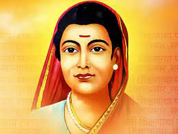

Tribute to SavitriBai Phule

SavitriBai Jyotirao Phule:(3rd January 1831 - 10th March 1897)
Early life:
Savitribai Phule was born on 3 January 1831 in the village of Naigaon in Satara District, Maharashtra.
Savitribai Phule was the youngest daughter of Lakshmi and just Patil, both of whom belonged to the Mali Community.
She had three siblings.Savitribai married her husband Jyotirao Phule at the age of 9 or 10 (he was 13).
Education:
Savitribai was illiterate at the time of her marriage. Jyotirao educated Savitribai and Sagunabai Shirsagar,
his cousin sister at their home along with working at their farm.Successfully done and finally,became a first
female teachers in India,a social reformer, and poet. Along with her husband, Jyotiba Phule in Maharashtra,
she played a vital role in improving women's rights in India.
Personal life:
Savitribai and Jyotirao had no children of their own.It is said that they adopted Yashawantrao, a son born to
a Brahmin widow. However, there is no original evidence available yet to support this.It is said when Yashwant
was about to get married, no one was willing to give him a girl because he was born to a widow. Hence, Savitribai
probably arranged his marriage to her organization's worker Dynoba Sasane's daughter in February 1889.
Death:
Savitribai and her adopted son Yashwant, opened a clinic to treat those affected by the worldwide Third Pandemic
of the bubonic plague when it appeared in the area around Nalasopara in 1897.died a heroic death trying
to save the son of Pandurang Babaji Gaekwad. Upon learning that Babaji Gaekwad's son had contracted the plague in
the Mahar settlement outside of Mundhwa, Savitribai Phule rushed to his side and carried him on her back to the hospital.
In the process, Savitribai Phule caught the plague and died at 9:00 pm on 10 March 1897.
Adapt:
- Consistency
- Dedication
- Social Work
See More About SavitiriBai Phule
"If you educate a man, you educate an individual.
But if you educate a woman, you educate an entire family and, eventually, a nation"
Created By Krutika Tatte